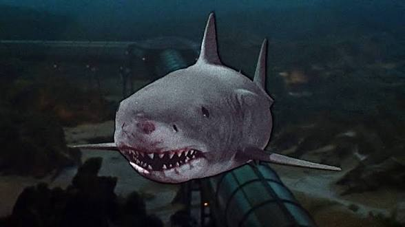

🦈 💦 JAWS 3D (1983) — CERTIFIED MGC G-5

🏛 MGC LOWER COURT OF APPEALS
- ASSET TITLE: Jaws 3-D (1983) – The SeaWorld Underwater Glass-Tunnel Ledger
- OFFICIAL REGISTRY GRADE: Certified MGC G-5 (Good / 3D Gimmick-Worn Sequel Specimen)
- LOWER COURT JURISDICTION: Judge Morpheus (Lower Court Floor)
- CASE FILE: #117
🕶️ THE 5X SCAN & DEFECT LOG
Morpheus sets the SeaWorld Orlando 35mm reel under the high-intensity 5x scanner, and lets the dual-projector 3D glare reveal every seam.
1. The Frozen-Frame 3D Glass Smash (Visual Effects Corrosion)
- The Defect: The film sacrifices physical realism to shove severed limbs, floating scuba gear, and a 35-foot shark straight toward the theater audience in 1983 stereoscopic 3D.
- The Breakdown: Nothing exposes heavy circulation wear faster than the climactic control-room attack, where a visibly static, frozen-frame great white glides forward in slow motion like a cardboard cutout before shattering the glass.
2. The “Mother Shark” Lagoon Physics Loop (Script & Logic Friction)
- The Defect: Trapping a skyscraper-sized 35-foot mother shark inside a man-made Florida theme park lagoon forces the script into nonstop mechanical contrivances.
- The Breakdown: From flooded underwater viewing tunnels that conveniently hold out just long enough for dialogue to a baby great white dying immediately in captivity to trigger a maternal rampage, the narrative logic runs on pure 1980s B-movie fumes.
3. Why It Beats Jaws: The Revenge by One Point (G-5 vs. G-4)
- The Breakdown: Unlike the 1987 Bahamas sequel, Jaws 3-D actually delivers a fun, claustrophobic disaster-movie hook—trapping park guests inside submerged acrylic tunnels while a giant shadow circles overhead—backed by an earnest cast (Dennis Quaid, Bess Armstrong, and Louis Gossett Jr.) that keeps the specimen one solid notch above the G-4 floor.
⚖️ MORPHEUS’S BENCH VERDICT
Morpheus taps the 5x lens twice, and stamps the SeaWorld dossier.
- With cheesy 1983 3D gimmicks and frozen-frame shark effects balanced by genuinely fun underwater-tunnel claustrophobia, this specimen locks cleanly into the registry as a Certified MGC G-5 Good. Case Closed. 🦈💦🕶️

• © 2026 MOVIE GRADING CONSENSUS. All Sovereign Rights Reserved.